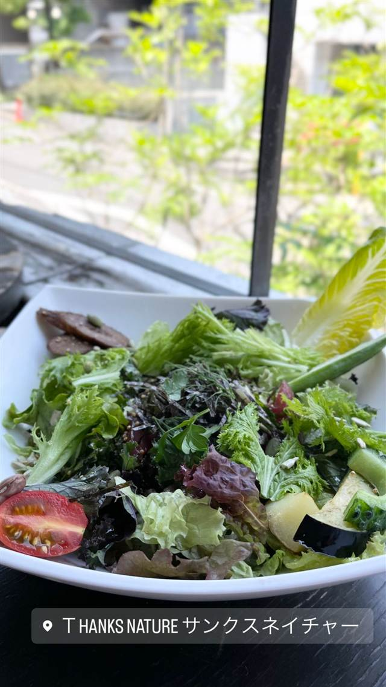
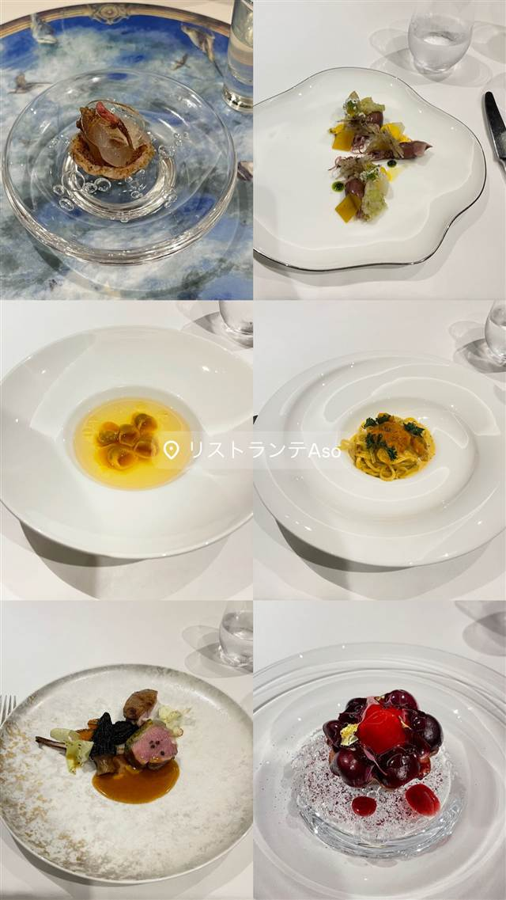
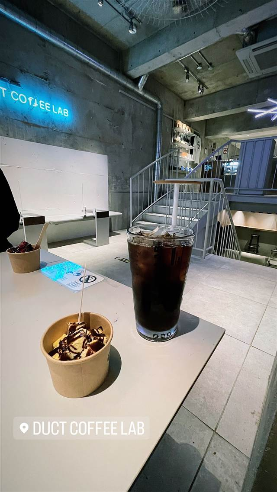
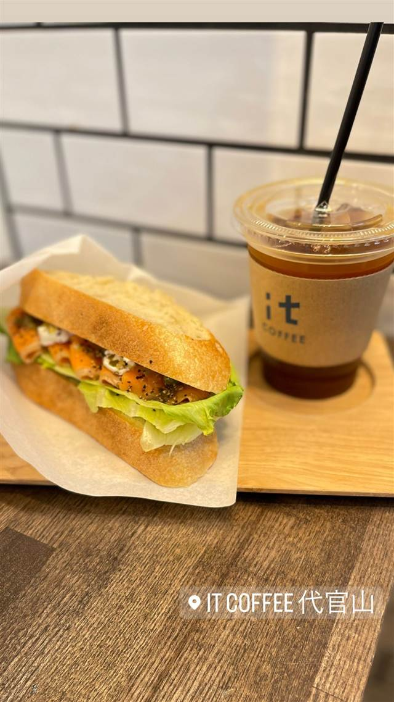

Thanks Nature 恵比寿代官山店
元は鉢植え専門のガーデン会社発、39品目のサラダボウル
THANKS NATURE サンクスネイチャー
Thanks Natureは、1994年にガーデンショップとして始まった「株式会社ガーデン」が手がけるオーガニックレストラン。「おいしいのに、ヘルシー」を掲げ、39品目もの野菜を使ったサラダボウルが名物になっている。
TRIVIA
豆知識
- 運営元はもともと鉢植え植物専門のガーデンショップとして1994年に始まった会社
- 看板メニューは39品目もの野菜を使ったサラダボウル
REVIEWS
世間の評判
3.45食べログ
野菜の新鮮さとボリューム満点のサラダ
- 野菜がたっぷりで満足度が高いと評価する声が多い
- サラダ丼や生姜スープ、デザートなどメニューの評判が良い
- 代官山の隠れ家的な雰囲気で女子会に向くという声がある
- 人気店でランチ時は平日でも30分ほどで満席になるという指摘がある
食べログ 口コミ483件
| 創業 | 1994年、鉢植え植物のみを扱うガーデンショップとして事業スタート |
|---|---|
| 系譜 | ガーデン事業を母体とする「株式会社ガーデン」グループが展開するオーガニックレストラン |
| 看板 | 39品目サラダボウル |
| こだわり | 「おいしいのに、ヘルシー」をコンセプトに、オーガニック食材を使った39品目サラダや有機ハーブティーなどを提供。ガーデン事業のノウハウを活かし「自然を取り入れた暮らし」を提案 |
| どこから | 都心 |
| 予算 | 昼 ¥1,000～¥1,999 夜 ¥5,000～¥5,999 |
| 定休日 | 無休 |
| 予約 | 予約可 |
| 場所 | 代官山駅 東京都渋谷区恵比寿西1-30-14 エコー代官山2F |
| メモ | 恵比寿・代官山の両駅から徒歩圏内 |
食べたもの：サラダ
NEARBY
近い店・同じ系統の店
-

イタリアン 代官山駅 リストランテASO 昭和初期の洋館で味わう、樹齢300年の欅を望むコース料理 夜 ¥20,000～¥29,999 -
 メキシコ 代官山駅
Hacienda del cielo MODERN MEXICANO
天井高8mの吹き抜けとテラスから東京タワーを望むモダンメキシカン
昼 ¥1,000～¥1,999 夜 ¥4,000～¥4,999
メキシコ 代官山駅
Hacienda del cielo MODERN MEXICANO
天井高8mの吹き抜けとテラスから東京タワーを望むモダンメキシカン
昼 ¥1,000～¥1,999 夜 ¥4,000～¥4,999
-
 メキシコ 代官山
ZEST CANTINA 代官山
恵比寿の大型店が10年越しに代官山で復活したテックスメックス
昼 ¥1,000～¥1,999 夜 ¥3,000～¥3,999
メキシコ 代官山
ZEST CANTINA 代官山
恵比寿の大型店が10年越しに代官山で復活したテックスメックス
昼 ¥1,000～¥1,999 夜 ¥3,000～¥3,999
-
 ブランチ 代官山
IVY PLACE
本来は白い箱形の予定だった、別荘風の一軒家でパンケーキ
昼 ¥4,000～¥4,999 夜 ¥6,000～¥7,999
ブランチ 代官山
IVY PLACE
本来は白い箱形の予定だった、別荘風の一軒家でパンケーキ
昼 ¥4,000～¥4,999 夜 ¥6,000～¥7,999
-

コーヒー 代官山駅 DUCT COFFEE LAB（ダクトコーヒーラボ） 注文ごとに一杯ずつ淹れるハンドドリップコーヒー 昼 ¥1,000～¥1,999 夜 ¥1,000～¥1,999 -

コーヒー 代官山 it COFFEE 代官山 日本バリスタチャンピオンが淹れる、全て自家焙煎のコーヒー 昼 ～¥999 夜 ～¥999